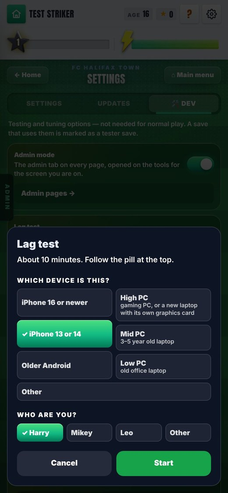
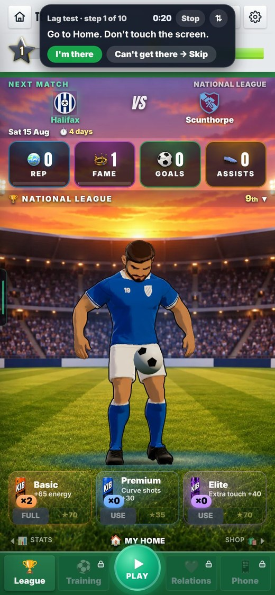
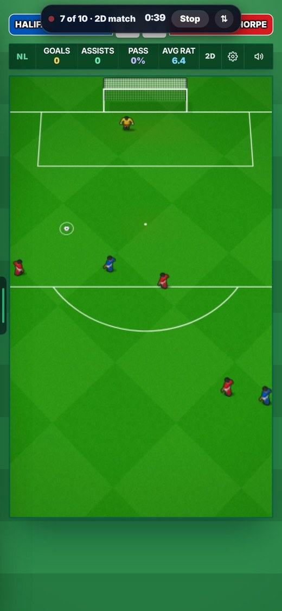
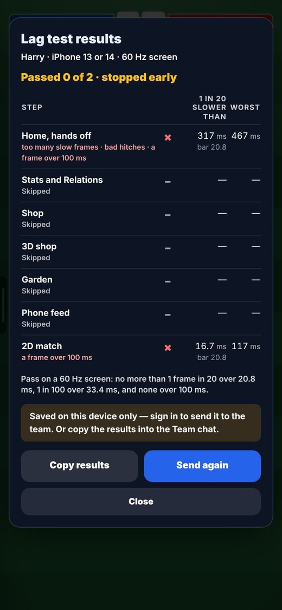

On the Harry branch, not live yet.
Overnight round, 20 Oct 2026. This round adds the test only. It measures lag and does not fix any. In Admin → Patch notes this is v0.89.
There was no way to measure lag on each person’s own phone. The three of you have three levels of phone.
Lag is frame timing. Only the phone itself can say how it ran.
Open ⚙ (top right of Home) → 🛠 Dev → Start lag test. It is for testers and admins only. The link /star-dev?lagtest=1 opens it too. First you pick your device and your name. Devices: iPhone 16 or newer, iPhone 13 or 14, Older Android, High PC, Mid PC, Low PC, Other.

Lag looks different on each screen.
A quiet Home and a 3D match ask different things of a phone.
A pill at the top leads you. It says where to go, then you tap I’m there, wait for “Done, tap Next” and tap Next. Can’t get there → Skip skips a step. Stop ends the run. ⇅ moves the pill.
The ten steps:


One “frames a second” number hides stutter.
One long frame is a visible hitch even when the average is fine.
It records the gap between frames (the middle one, 1 in 20, 1 in 100 and the worst), slow stretches in Chrome, how late a 20 ms timer fires (iPhone too), 3D counters, memory and the time the page was hidden. It works out your screen’s refresh rate from the idle gaps.
The pass rule on a 60 Hz screen, as the results card prints it: no more than 1 frame in 20 over 20.8 ms, no more than 1 in 100 over 33.4 ms, and none over 100 ms. The low tier has a 30 fps rule.
The results had to reach the team with no SQL and no sign-up page.
Three people on three phones need one place to read the runs.
The game’s server saves each run as a file on a branch called lag-runs (lag/runs/<time>-<person>-<tier>.json). Builds of that branch are stopped, so a run never starts a deploy. If it cannot send, the run stays on the phone. Tap Send again, or Copy results and paste them into the Team chat. After a run, read them with npx tsx scripts/lag-runs.mts.

Only Home and the 2D match were recorded (2,370 frames). Steps 2 to 6 and 8 to 10 were not seen. A real save to GitHub was not seen. The cut-scene hand-off was not seen.
The test ran signed out. The save answered 401 “Sign in to send”, as it should.
Run the whole test on a phone, signed in. Then read the run with the terminal line above.
The picture says “Passed 0 of 2 · stopped early”. Home shows 317 ms and a worst frame of 467 ms.
It was made in a test browser on a build machine, even though the card says iPhone 13 or 14. That is reasoned from “seen signed out at 390 × 844”. It is not stated in the report.
Ignore those numbers. A phone run decides.
Where. ⚙ (top right of Home) → 🛠 Dev → Start lag test. Also /star-dev?lagtest=1. Testers and admins only.
Length. 10 steps. The card says about 10 minutes. About 5 minutes of that is recording.
Records. Frame gaps (middle, 1 in 20, 1 in 100, worst) counted over 33, 50 and 100 ms. Long tasks and slow-frame reports (Chrome only). A 20 ms timer’s lateness (iPhone too). 3D counters, memory, time hidden. Refresh rate from the idle middle gap.
Bars. In the game’s lag-test file, including the 30 fps rule for the low tier and a 0.5 ms allowance for timer jitter.
Saved to. Branch lag-runs, file lag/runs/<time>-<person>-<tier>.json. vercel.json stops builds of that branch.
Seen. Signed out at 390 × 844: Home and a 2D match, 2,370 frames. A 401 “Sign in to send”.
The stills show every screen that was seen.